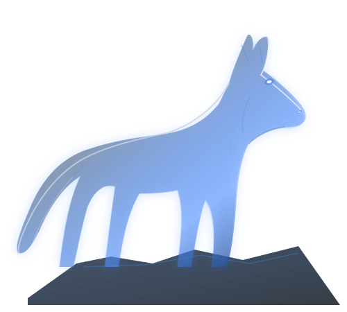

UMA JORNADA FEITA COM AMOR
Para alguém
extraordinário.
Algumas pessoas são luz, mesmo quando tudo ao redor parece noite.

O GUARDIÃO DA FLORESTAHÁ HISTÓRIAS QUE MERECEM SER CONTADAS
Força também
é cuidar.
Na imensidão da floresta, existem seres que carregam uma força especial. Não apenas pela coragem, mas pela capacidade de proteger, cuidar e deixar marcas por onde passam.
Esta jornada é dedicada a alguém muito especial. Alguém cuja presença transforma os dias comuns em lembranças que ficam para sempre.
02 / PEQUENAS VERDADES
Cinco estrelas.
Infinitos motivos.
Toque em cada estrela e descubra uma mensagem.
03 / O QUE FICA
Memórias que
moram no coração.
Todo momento especial merece um lugar para continuar vivo.
ESPAÇO RESERVADO PARA FOTOS DE VOCÊS
04 / UM GESTO SIMPLES
Se eu pudesse,
te daria um abraço
agora.
Às vezes, um abraço consegue dizer tudo aquilo que as palavras não conseguem.
Sinta todo o carinho que existe neste gesto. Você é muito especial. ♡
05 / COM TODO O MEU AMOR
O melhor ainda
está por vir.
Esta jornada termina aqui, mas o carinho que inspirou cada detalhe continua. Preparei uma última surpresa para você.
Descobrir minha surpresa FEITO COM AMOR, PARA SEMPRE.